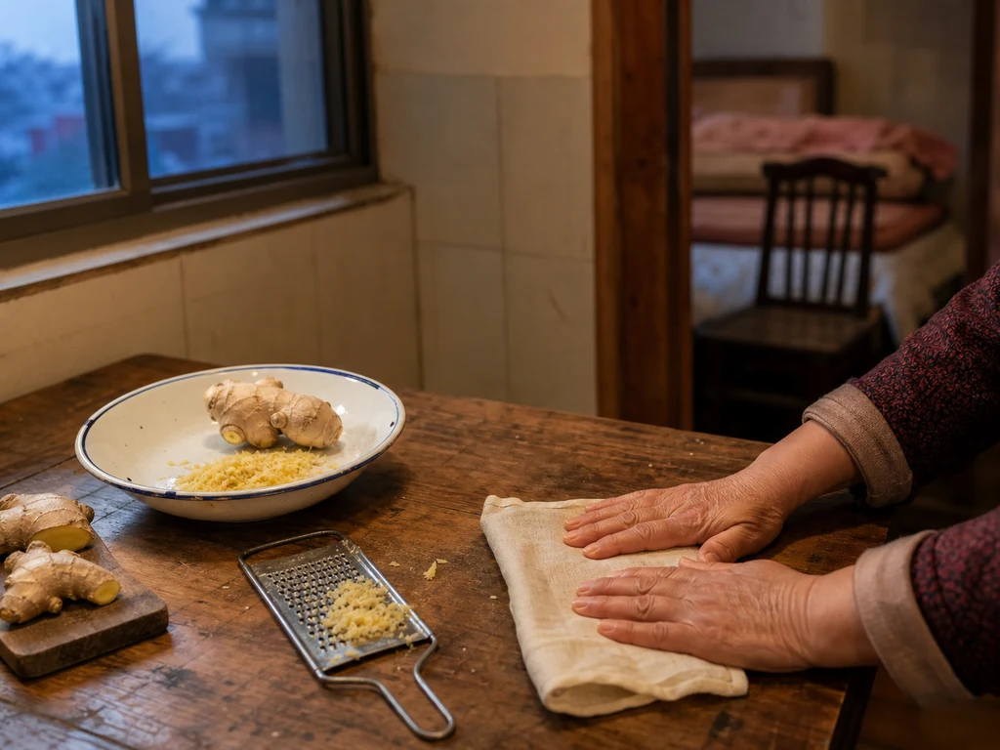

Ginger Beneath the Folded Belly Cloth
An older neighbor grated fresh ginger into a thin cotton square, folded the cloth inward, and tucked it beneath a loose nightshirt before bed.

The neighbor's square of cloth
I first noticed the practice in the apartment across the landing. The older neighbor kept a stack of thin cotton squares in a kitchen drawer, washed smooth from repeated use. She chose one, spread it beside the chopping board, and grated ginger over its center.
She folded the opposite corners inward and pressed the little parcel between both palms. The cloth darkened where the ginger touched it. A clean handkerchief waited beside her chair.
Warmth moved from room to room
The parcel went beneath her loose nightshirt while she sat at the edge of the bed. She held it in place with one hand and pulled the quilt across her knees with the other. I moved the enamel bowl from the stool before leaving the room.
A coarse-salt bag belonged to the winter chair, and ginger slices appeared in the foot basin on colder nights. The warm towel folded over tired eyes used another cloth and another room. This ginger parcel remained small enough to disappear under clothing.
The cloth at the washbasin
Later, the neighbor unfolded the square over the basin and shook the ginger into the kitchen-waste bowl. She rinsed the cloth separately, then spread it across the tap beside the handkerchief.
The grater was already dry on the rack. Only the sharp ginger smell remained near the sink.